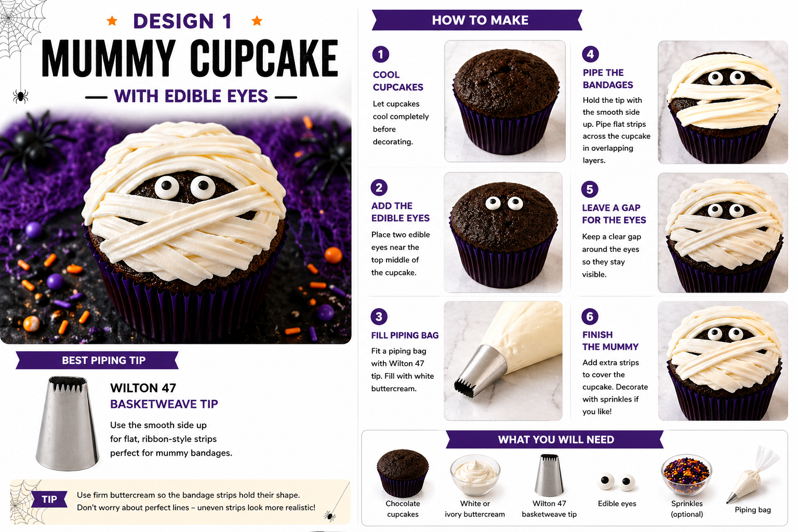
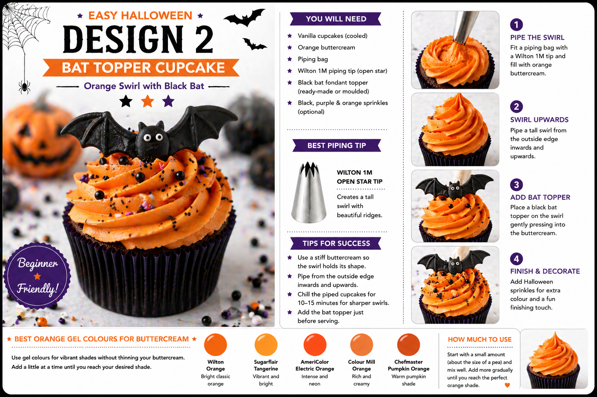

Halloween cupcakes are one of the most straightforward ways to build a spooky dessert table — and with the right designs, they look polished and party-ready without requiring advanced decorating skills. A few simple tools, some coloured buttercream, edible eyes and ready-made toppers are all you need.
This guide focuses on two designs that work well together precisely because they contrast each other: one is flat and characterful, the other tall and dramatic.
- Mummy cupcakes with edible eyes
- Orange swirl cupcakes with black bat toppers
Why These Two Designs
Some Halloween cupcake designs — fondant skulls, detailed pumpkin faces, witch hats built from moulded fondant — look brilliant in photos but take more time and skill than most home bakers want to commit to. These two have been chosen because they use simple, forgiving techniques:
- Flat buttercream strips for the mummy, which are meant to look uneven
- A standard orange buttercream swirl for the bat cupcake
- Edible eyes and a ready-made or moulded bat topper as the focal point
The mummy cupcake is cute and instantly recognisable. The orange bat cupcake adds height, colour and drama. On a table together they give you variety in shape, colour and style without doubling the work.
Mummy Cupcake with Edible Eyes

The mummy cupcake is one of the most forgiving Halloween designs to make at home. The buttercream bandages are supposed to look uneven and wrapped — which means imperfect lines actually improve the effect. Chocolate cupcakes work particularly well here because the dark sponge shows through between the white strips, giving the mummy face more contrast and character.
What You Will Need
| Item | Purpose |
|---|---|
| Chocolate cupcakes | Dark sponge gives the mummy face contrast and depth |
| White or ivory buttercream | Creates the mummy bandages |
| Piping bag | Holds the buttercream |
| Wilton 47 basketweave tip | Creates flat, ribbon-like bandage strips |
| Edible eyes | The mummy face — the whole character of the design |
| Black sanding sugar or Halloween sprinkles | Optional finishing detail |
Best Piping Tip for Mummy Cupcakes
Use a Wilton 47 basketweave tip with the smooth side facing up. This produces a flat ribbon of buttercream that looks like a bandage strip. A Wilton 44 gives thinner bandages if you prefer a more delicate look.
If you do not have a basketweave tip, a small snip at the end of a plain piping bag will still work — the lines will be slightly less flat and ribbon-like, but the mummy effect reads clearly regardless.
How to Make Mummy Cupcakes
- Cool the cupcakes completely. Warm cupcakes will soften the buttercream and cause the bandage strips to lose shape. Chocolate sponge works best for the contrast behind the white bandages.
- Place the edible eyes first. Position two edible eyes near the upper middle of the cupcake. A tiny dot of buttercream underneath each eye helps keep them in place while you pipe around them.
- Fill the piping bag. Fit the Wilton 47 tip, smooth side up. Ivory buttercream gives a more realistic wrapped-fabric look than bright white — worth the extra colouring step.
- Pipe the bandages. Pipe flat strips of buttercream across the cupcake in different directions, overlapping slightly to look wrapped. Leave a visible gap around the eyes so they remain the focal point.
- Finish the edges. Add a few short strips around the outside to make the cupcake look fully wrapped. A light dusting of black sanding sugar can add extra detail, but keep it minimal — the mummy face should stay clear.
Mummy Tip
Do not aim for neat, uniform strips — random overlapping lines with slightly different angles make the mummy effect look better. If the buttercream softens as you work, chill it for 5–10 minutes and continue.
Orange Swirl Cupcake with Black Bat Topper

This design gives the display its height and colour. The orange buttercream swirl is straightforward to pipe, and the black bat topper does most of the visual work. You can make bat toppers yourself from black fondant using a cutter or silicone mould, or use ready-made edible bat decorations if you want to keep preparation simple.
What You Will Need
| Item | Purpose |
|---|---|
| Vanilla or chocolate cupcakes | Cupcake base |
| Orange buttercream | Main swirl colour |
| Piping bag | Holds the buttercream |
| Wilton 1M piping tip | Creates the tall open-star swirl |
| Black bat fondant topper | The main decoration and focal point |
| Halloween sprinkles | Adds colour and texture around the base of the swirl |
| Black sanding sugar | Optional darker finish |
Getting the Right Orange
Always use gel food colouring for buttercream — liquid colouring is not concentrated enough and will thin the mixture. These gel colours all give a strong Halloween orange:
| Colour Gel | Result |
|---|---|
| Wilton Orange | Classic bright orange, widely available |
| Sugarflair Tangerine | Strong, vibrant orange |
| Colour Mill Orange | Rich, smooth tone — blends well |
| Chefmaster Pumpkin Orange | Warmer, pumpkin-style shade |
Start with a small amount — about the size of a pea — and build up gradually. Colours deepen as buttercream rests, so colouring it a few hours ahead gives the most even result.
How to Make the Orange Bat Cupcake
- Colour the buttercream. Mix orange gel colouring into a firm vanilla buttercream until the colour is even throughout. Chill briefly if the mixture becomes too soft.
- Fill the piping bag. Fit a piping bag with the Wilton 1M tip. Spoon in the buttercream and push it down toward the nozzle. Twist the top to remove air pockets.
- Pipe the swirl. Start at the outside edge of the cupcake and pipe in a circle, working inwards and upwards until you reach the centre. Finish with a small peak. This is the opposite of a rosette — outside edge first, centre last.
- Add the bat topper. Press the bat gently into the centre of the swirl so it stands securely. If the topper is heavy, wait until the buttercream has firmed slightly first.
- Finish with sprinkles. A small amount of black, purple and orange sprinkles around the base of the swirl adds detail without overwhelming the bat. Less is more — the topper should remain the focus.
Bat Topper Tip
If using fondant bats, let them firm up for at least 30 minutes before placing them onto buttercream. For large or delicate toppers, add them closer to serving time rather than in advance, to prevent them sinking or toppling during storage.
How the Two Designs Work Together
| Design | Colour | Shape | Style |
|---|---|---|---|
| Mummy cupcake | White & ivory | Flat wrapped top | Cute, characterful |
| Bat swirl cupcake | Orange & black | Tall swirl | Bold, dramatic |
Box of 12: 6 mummy cupcakes + 6 orange bat cupcakes
Box of 6: 3 mummy cupcakes + 3 orange bat cupcakes
For a larger party table, purple, black and orange sprinkle cupcakes make a simple third design to fill out the display without adding complexity.
Optional Extra Designs for a Fuller Table
If you want to expand beyond the two main designs, these are straightforward additions that complement the mummy and bat cupcakes well:
- Purple spider web cupcakes — smooth purple fondant or buttercream top, black web piped with writing icing or melted chocolate, small spider decoration
- Black rosette with ghost topper — Wilton 2D tip, black buttercream rosette, white ghost topper
- Pumpkin swirl cupcakes — orange buttercream swirl with a small pumpkin topper or pumpkin sprinkles
- Purple and black swirl — purple, black and ivory in a piping bag, Wilton 1M tip, finished with edible eyes or Halloween sprinkles
Colour Palette for a Premium Look
Avoiding overly bright or cartoon-like shades makes a noticeable difference to how polished the finished table looks. These tones work together well:
| Colour | Best Use |
|---|---|
| Pumpkin orange | Buttercream swirls and accents |
| Deep purple | Cupcake cases, sprinkles and background styling — makes the display feel more premium |
| Black | Bat toppers, cupcake cases and spooky details |
| Ivory | Mummy bandages and ghost details — softer than pure white |
| Metallic gold or copper | Optional luxury accent, used sparingly |
Beginner Tips for Better Results
- Use firm buttercream throughout. If piping collapses, chill it briefly or add a little more icing sugar before continuing.
- Let uneven bandages be uneven. Random overlapping strips look more realistic than neat, uniform lines.
- Place edible eyes before piping. Set the eyes first, then pipe the bandage strips around them, leaving a gap so the eyes stay visible.
- Do not overfill the piping bag. A half-full bag is far easier to control than a full one.
- Pipe one practice swirl first. Do it on baking paper, scrape it off, and reuse the buttercream before decorating the actual cupcakes.
- Use deep purple or black cupcake cases. Matching cases make the whole display look more considered — a small detail with a noticeable difference.
- Colour buttercream ahead of time. Orange and other deep colours deepen as they rest. Colouring an hour or two before you need to pipe gives the best result.
Your Questions Answered
Can you make Halloween cupcakes the day before?
Yes. Store them in a covered cupcake box or airtight container in a cool, dry place. Avoid placing fondant decorations in a humid fridge as fondant can become sticky. If using fondant bat toppers, make them ahead so they can firm up, but consider adding them on the day for the best result.
How do you transport Halloween cupcakes?
Use a proper cupcake box with inserts to prevent movement. Mummy cupcakes are easier to transport because they are flat. Bat topper cupcakes are taller — check the box has enough height clearance. Add delicate toppers after transport if needed. Keep cupcakes away from direct sunlight and avoid leaving them in a warm car.
What if the orange colour looks weak?
Always use gel colouring rather than liquid, and allow the buttercream to rest — the colour deepens over time. If you need a stronger shade immediately, add more gel gradually and mix thoroughly. Avoid adding too much at once, which can affect the buttercream texture.
What if the mummy bandages are too neat?
This is genuinely not a problem — overlap more strips in different directions to break up the regularity. The mummy effect reads best when the strips feel random and layered rather than parallel and uniform.
Useful Tools
- Wilton 47 basketweave piping tip
- Wilton 1M open star piping tip
- Wilton 2D closed star piping tip (for rosette extras)
- Disposable piping bags
- Edible eyes
- Orange gel food colouring
- Black fondant bat toppers or bat cutter / silicone mould
- Halloween sprinkle mix
- Black or deep purple cupcake cases
- Black sanding sugar
- White or ivory buttercream
The mummy and bat designs work as a pair because they are doing different things — one is flat and characterful, the other tall and bold. A cupcake box or cake stand with both gives you variety in shape, colour and style without needing to master more than two techniques.
If you are planning a Halloween party and want to see more celebration styling ideas, our fondant cupcake ideas guide covers a range of designs for different occasions. Or if you would like us to style your Halloween party table, get in touch — we work across Sittingbourne and Kent.
Planning a Halloween Party?
We style party tables, balloon displays and full celebration setups across Sittingbourne and Kent. Tell us about your event and we will put something brilliant together.